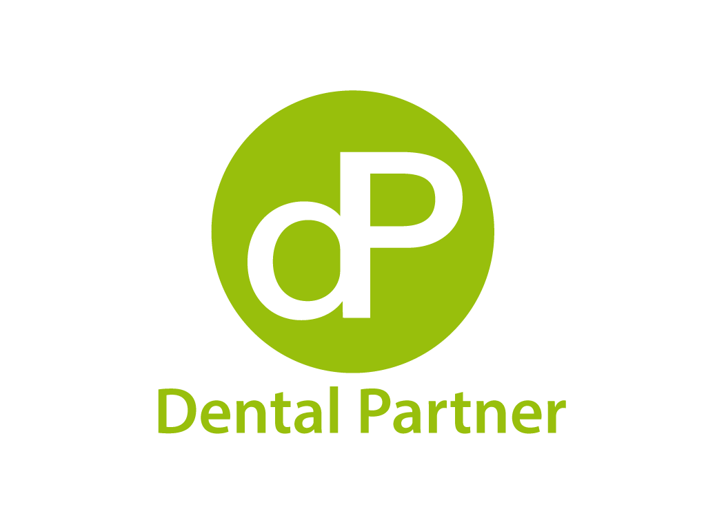

Vi erbjuder tandtekniska lab möjligheten till bättre lönsamhet. Genom att låta oss fokusera på logistiken kan ni sköta det som är allra viktigast för er – att fokusera på kvalité.
För dig som tandtekniker är din tid på labbet värdefull. Det är oerhört viktigt att kunna koncentrera sig på produktion och noggrannhet, eftersom det är något som de flesta tandläkare ställer höga krav på. Dagarna då du var tvungen att agera din egen budchaufför och ge dig ut i trafiken är förbi.
Våra medarbetare besöker tandläkarna flera gånger om dagen. Det innebär att dina kunder får sina färdiga arbeten snabbare, vilket ger ditt lab en servicenivå som vanliga, generella budfirmor helt enkelt inte kan matcha. Vi förstår att vi utför ett viktigt arbete för samhället – timmarna du lägger på labbet är nyckeln till många människors fina leenden.
Genom att dela upp staden i välplanerade distrikt erbjuder vi ditt dentallab möjligheten att nå ut till större delar av regionen på ett extremt effektivt och miljövänligt sätt. Vi samordnar transporterna i våra ekonomiska, smidiga personbilar (VW Golf/Polo) och skyddar dina känsliga avtryck och kronor i de karaktäristiska små, vita papperspåsarna.
Ring oss idag så sätter vi upp en logistikplan som passar just dina hämtningstider.
📞 073-321 17 51